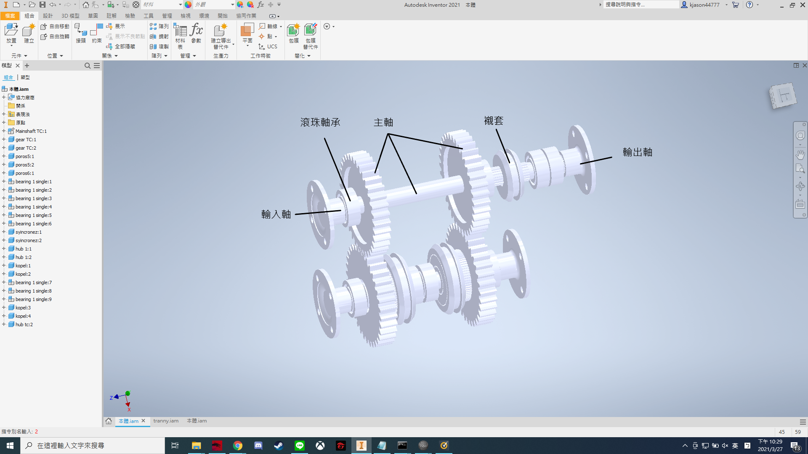
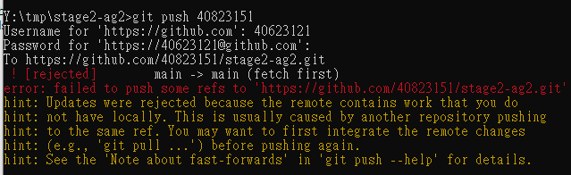
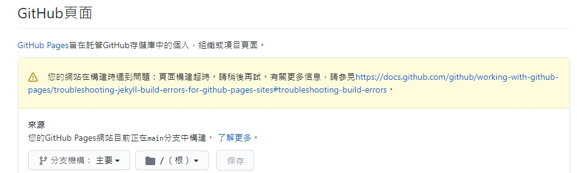
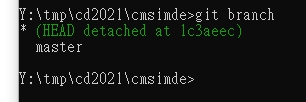

stage2-ag2

Creat by
40623121 蔡朝旭
40823151 陳冠宇
40871106 黃翊銘
40823132 黃靖傑
研究主題
"變速機構 "
"產品介紹"
"設計理念"
由於這幾年各國經濟起飛家家戶戶都賺的盆滿鍋滿，有了錢就想要消費，於是想到有錢人都會買車，於是每個家庭必備了一台車，所以汽車業蓬勃發展，各個國家在汽車市場，都想要分杯羹。
然而台灣的汽車業有如剛出生的小羊，嗷嗷待哺一般，剛踏入市場，引擎跟人買，變速箱跟人拿，車架跟人借
"設計理念"
所以為了能幫助台灣汽車業蒸蒸日上，所以我們決定全車由我們台灣人自己設計製造，但想要一步登天，將全車在這短短的一個月內設計出來有如癩蛤蟆想吃天鵝肉，所以這次協同產品設計，我們決定先設計汽車中至關重要的變速箱系統。
想要在換檔的時候不會有太大的震動，想要在起跑上贏過別人，想要在尾速速度可以繼續延伸，現在我們就來設計出台灣特有的變速箱，讓世界看見台灣!!!
"設計目標"
畫出一個有 N,1,2,3檔位的變速機構，並以CoppeliaSim模擬作動且用comsol找出最大承受應力、扭矩、主要受力部位。
5W1H
Who
40623121 蔡朝旭
40823151 陳冠宇
40871106 黃翊銘
What
變速機構 Transmission mechanism
Where
協同產品設計課程中
When
2021/3/25~2021/4/22
Why
進入第二階段，與新組員合作。經過討論後雙方決定不延續先前的作品。一番討論與觀看若干部影片後，看到齒輪箱的內部結構、齒輪與齒輪間的運作與不同齒比產生不同的轉速，覺得是個有挑戰性且好發揮的主題，便決定往這個方向進行協同設計。
How
先將構想草圖繪製出來，在根據此草圖將各部位零件用繪圖軟體協同設計並繪製。繪製完成並組裝後，載入到用CoppeliaSim模擬，並分析轉速變化、齒輪的徑向與軸向應力、換檔流暢度還有不同齒比配合產生的不同功能，例如:產生較大的扭力、省力恆速巡航…等等。
分工
40623121 蔡朝旭
繪製零件、繪製組合圖、程式模擬、製作PDF、網站編排
40823151 陳冠宇
CopplieliaSim動畫模擬、youtube影片製作、網站編輯
40871106 黃翊銘
繪製零件、繪製組合圖、inventer動畫、成品美化、網站編輯
40823132 黃靖傑
幫忙湊人數
你特別重要，希望你休學快樂先前資歷
飛機起降
多功能變型家具
Week5
一開始我們先是畫出初步概念圖，還有理解變速機構的作動及原理。
草圖
參考文獻
Week6
這週我們開始著手找國內、外的設計參考圖與原型，並開始畫各種版本的變速機構。
參考圖

第一版

第二版
.png)
Week7
將上下兩個軸個加上joint並設定好碰撞。
第一版
在製作旋轉軸的時候碰到了很多問題
像是碰撞開啟的狀態下，因為一個支架有兩根軸，並且兩根軸個別連接著一顆齒輪，並且這顆齒輪要互相傳動這造成碰撞開啟的時候會有抖動的狀況，原本想法是先將支架擺在從屬關係第一排，軸擺第二排，連接的一號齒輪擺第三個，傳動的齒輪擺第四個，但傳動的齒輪必須放在支架下面一層，所以只好使用兩種方法都試試看。
第二版
依照傳動順序續放入
效果不盡人意
第三版
從屬關係 : 支架第一層，第二層兩根軸，兩根軸下面各放一個齒輪。
可以看到第三版的齒輪作動正常，但因為coppeliasim沒辦法精確模擬太精密的東西，所以沒辦法每一尺都互相配合。
Week8
第四版
我們將每個齒輪都加一個joint，並配合好速度去模擬作動。
第五版
我們給予打檔桿路徑及dummy後，將關節設定成IK模式，並新增IK group和IK element，但是只能將打檔桿籤後移動而已，不能實際的作動，程式碼是設定target跟隨path運動，運動速度為0.02。
function sysCall_threadmain()
dummy_handle = sim.getObjectHandle('Target')
path_handle = sim.getObjectHandle('Path')
print('start follow path')
sim.followPath(dummy_handle, path_handle, 1, 0, 0.02, 1)
end
Inventor版
心得
W5
40623121 :
這週開始了第二次的分組專案，我這次就不是跟第一次分組的組員了，經過了討論許久後，我們雙方都不延續之前的主題，一個因為沒什麼發展空間，一個因為要延續的話太難，所以決定做變速箱，國內沒什麼資料或設計參考圖，我們也找了很多國外的資料，準備開始著手畫機構了。
W6
40823151
這周我們的協同網站經過了前人的指點，我們以極快的速度就建好了分組網站，並且這周因為圖很快就畫好了，所以我可以有充分的時間去研究CoppliaSim，在這個全然陌生的軟體，即便經過高人指導，在實際操作時，也是費了好大的一番功夫，才達成預期效果的一半，因為牽扯到干涉，以及裝配順序的問題，也是我們實際嘗試後，才慢慢知道要如何較有效率的使用CoppliaSim。
W7
40871106 :
零件繪製完成並載入CoppeliaSim模擬。模擬過程遇到許多問題，例如:運轉不順、間隙過小、模擬結果不如預期想像...等，之後都有想到對策，詳細解決方法參見Q&A。
W8
40623121
這週我們開始嘗試讓排檔桿做動，但是在設置dummy跟設置IE關節時遇到了很多問題，但時間的關係所以只能省略很多零件以及加緊腳步了，畢竟下禮拜要報告了。
遇到的問題
Q1 : 組員在推送給其他組員時發生錯誤，沒辦法推送。

A1 : 後來發現是另一個組員在網站上有更動README的內容，所以多了一個版本，之後使用 git reset --hard HEAD~ 降了一個版本後再用 git push -f 強制推送後即解決。
Q2 : 推送完後近端有推送成功，但遠端沒有綠勾，且gmail寄來維護遇到問題的信件。

A2 : 因為cmsimde的版本錯誤，進到cmsimde目錄下輸入 git branch 查詢分支後，輸入 git checkout 當前分支 後重新推送即解決。

Q3 : 我們有些大標題在遠端的網站沒有顯示出來，像圖中就沒有Q&A。
.png)
A3 : H1 標題數量過多，當頁面 H1 標題數量超過一定數量之後, 大標題可能沒辦法以一列顯示, 而是必須出現在第二行,，結果將會導致頁面展開時的 Javascript 程式產生錯亂，且不能直接以滑鼠點擊進入特定頁面，後來我們整理完標題數目後就沒問題了。
Q4 : 為什麼齒輪在CoppliaSim模擬動畫時都會飛掉?
A4 : CoppliaSim無法模擬太過精密的東西。
Q5 : 為什麼近端會出現許多亂碼或重複文字?
A5 : 因為有時在近端更改時沒有推送給其他人，所以git pull更新完後在merge時不同的東西就會發生衝突。
筆記
最終成果
PDF : 2021-協同產品設計實習-stage2-ag2
stage2-ag2 網誌大綱